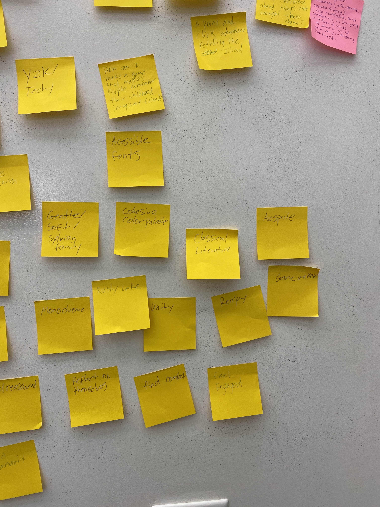
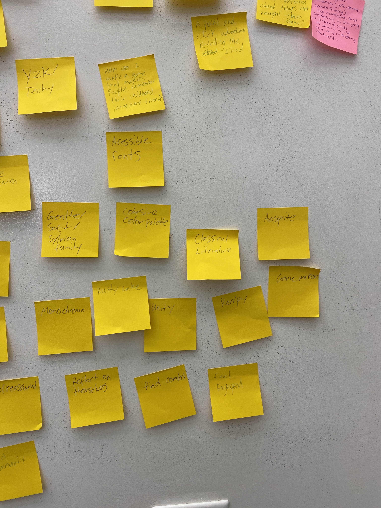
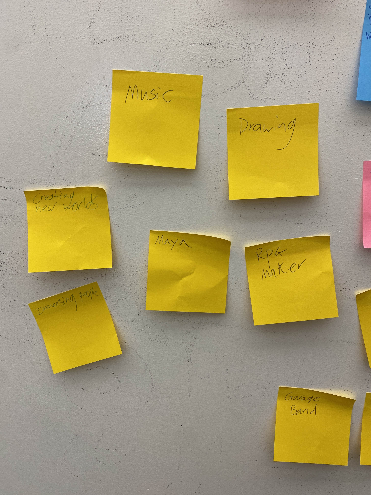
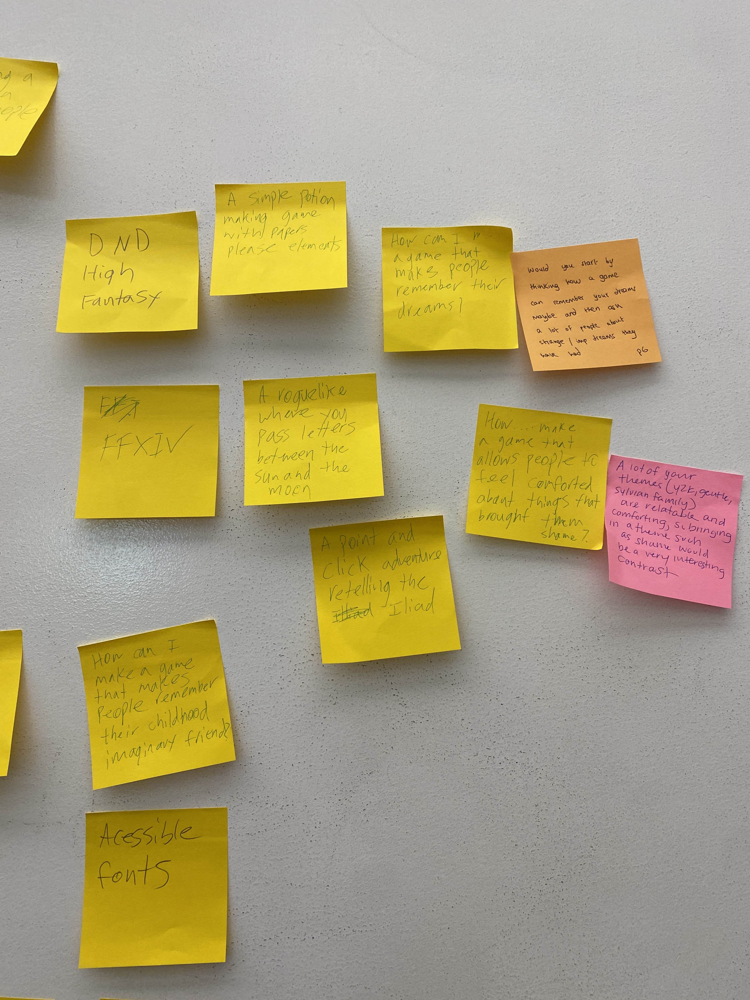
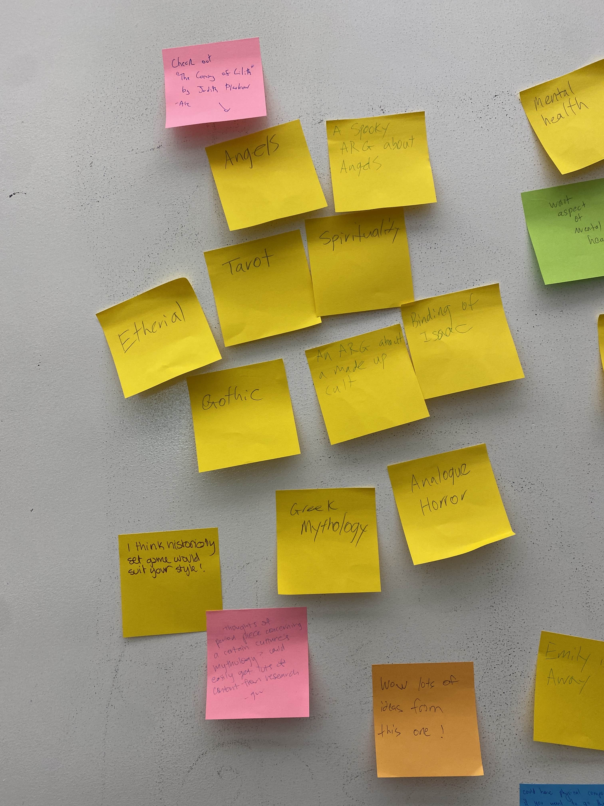
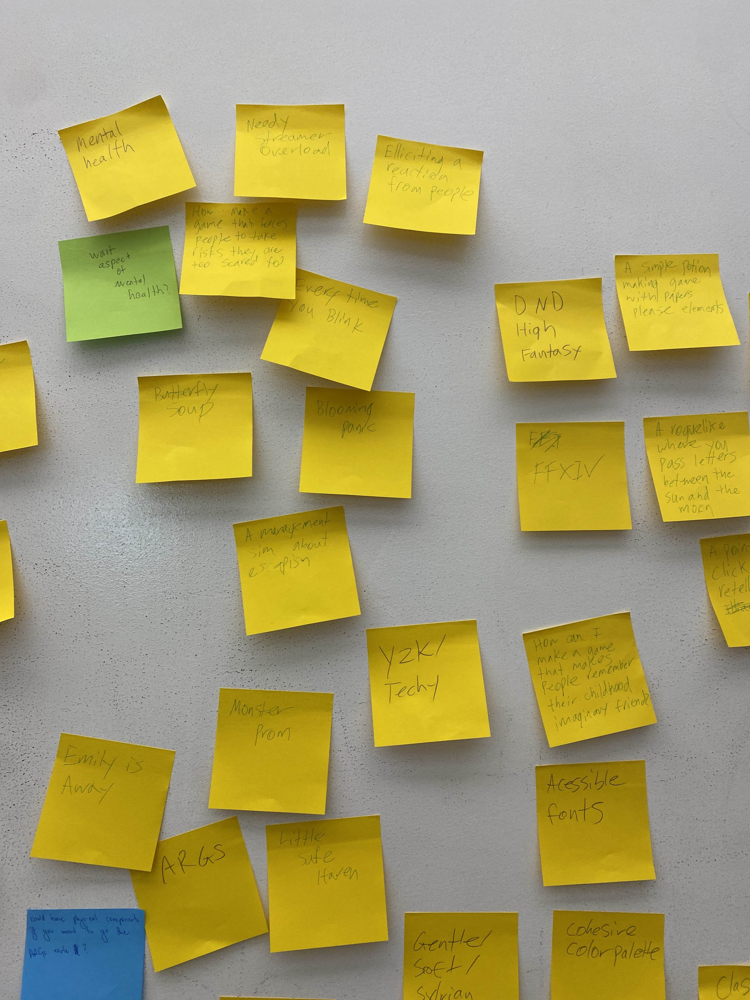
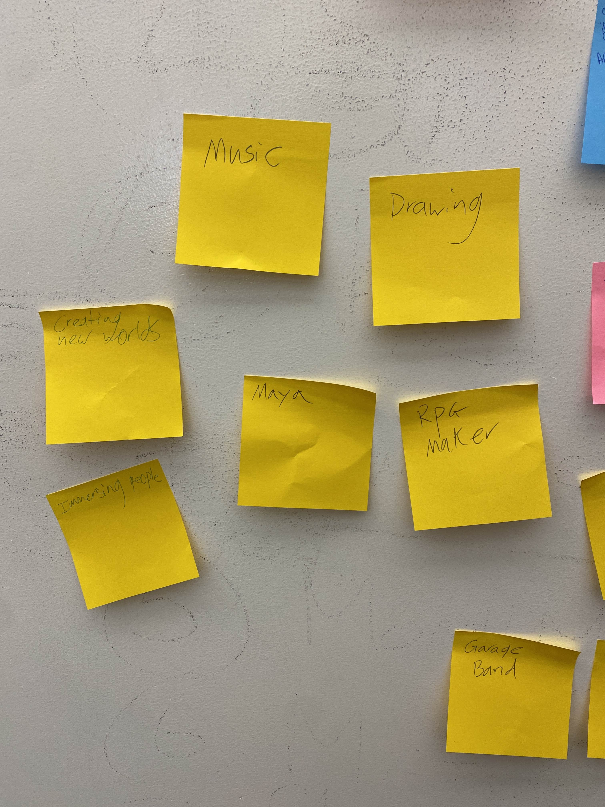
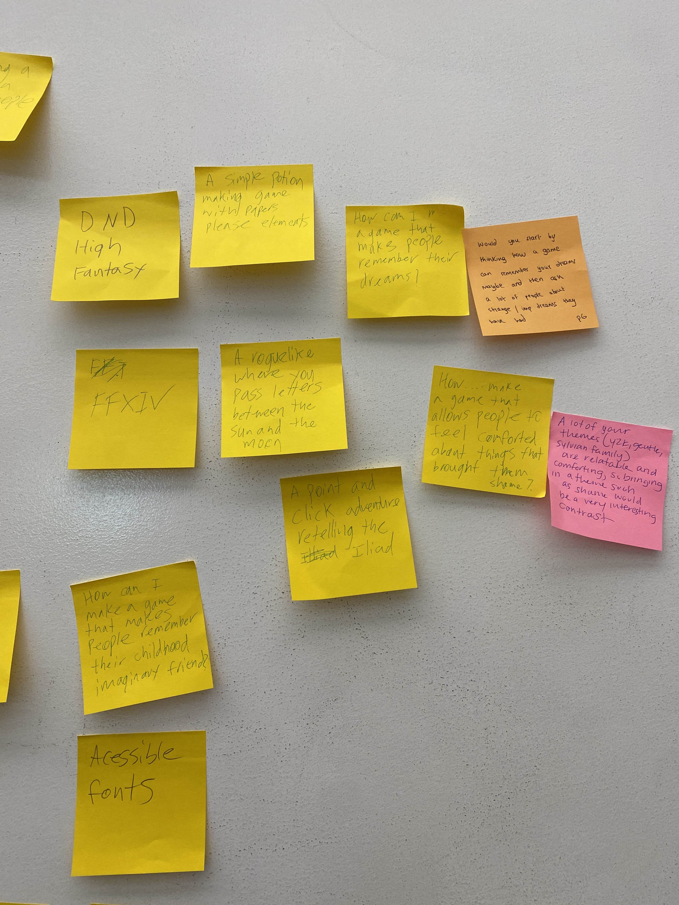
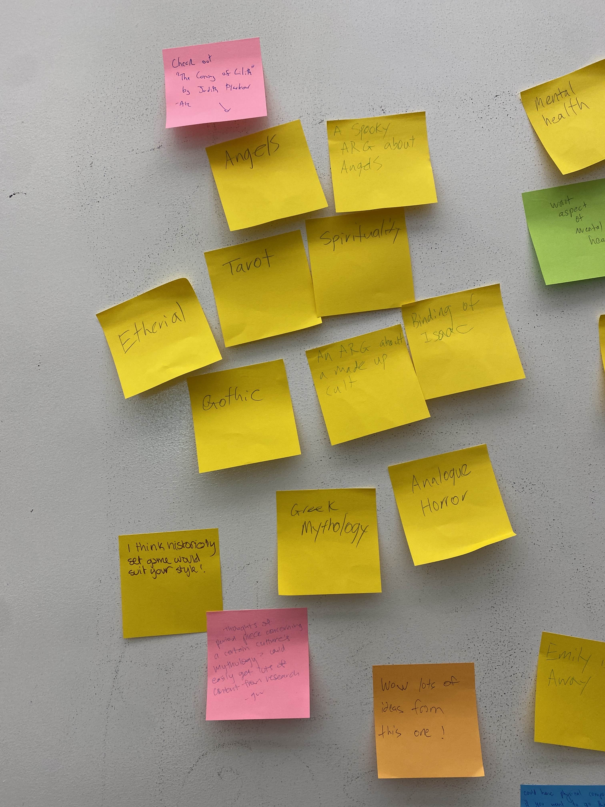
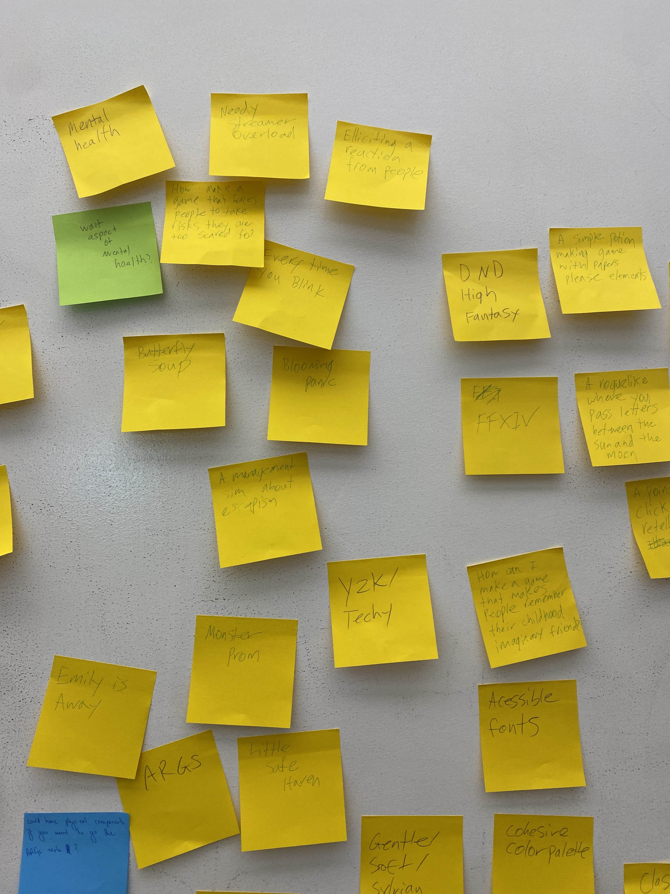

To start off our thesis journey, we did an in class exercise for brainstorming. We were given a stack of sticky-notes, presented with prompts and given a couple of minutes to write as much as we could. Most of these prompts were directed at our own interests and gave us a chance to look to them for inspiration on what we might want to pursue in our thesis. Going into this class, I already had a pretty good idea of what I wanted to do. However, I put that off to the side and proceeded with the exercise as if I didn't. Even if I think I know what I want, it makes sense to try other things out, as I don't want to limit myself just yet and end up struggling because of it later.
I jotted down whatever came to mind, and landed among things like "mental health", "Greek mythology", "Unity", "Y2K". Once we had written everything down, we were tasked with trying to group our notes together. I struggled a bit with this, partially because there was just so much, but also because there were so many different ways I could group things together. I almost wish I could string yarn to connect groups together like a word-web or conspiracy board rather than putting them in isolated groups.
Once the notes were written and organised, we walked around the room to look at what other people had written and give feedback. It was interesting to see the directions that other people were heading in, and at the end I got a few helpful notes on things to look into. Overall, I think this exercise gave me an opportunity to look around at all my interests and how they could be combined and incorporated into projects. It felt nice to have a simplified visual representation of potential pathways and ideas.
Here are some photos taken from the end of the brainstorming:
I jotted down whatever came to mind, and landed among things like "mental health", "Greek mythology", "Unity", "Y2K". Once we had written everything down, we were tasked with trying to group our notes together. I struggled a bit with this, partially because there was just so much, but also because there were so many different ways I could group things together. I almost wish I could string yarn to connect groups together like a word-web or conspiracy board rather than putting them in isolated groups.
Once the notes were written and organised, we walked around the room to look at what other people had written and give feedback. It was interesting to see the directions that other people were heading in, and at the end I got a few helpful notes on things to look into. Overall, I think this exercise gave me an opportunity to look around at all my interests and how they could be combined and incorporated into projects. It felt nice to have a simplified visual representation of potential pathways and ideas.
Here are some photos taken from the end of the brainstorming:
 

 






